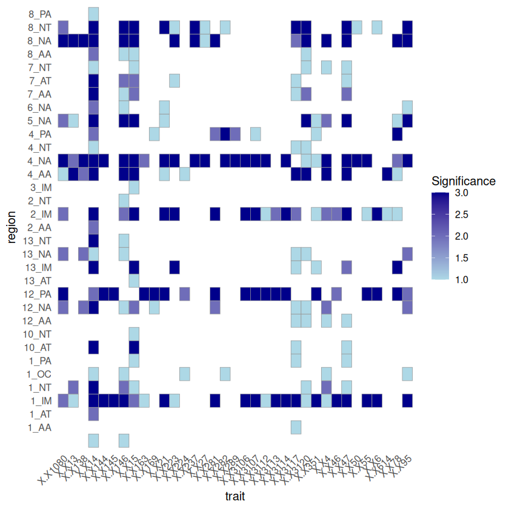
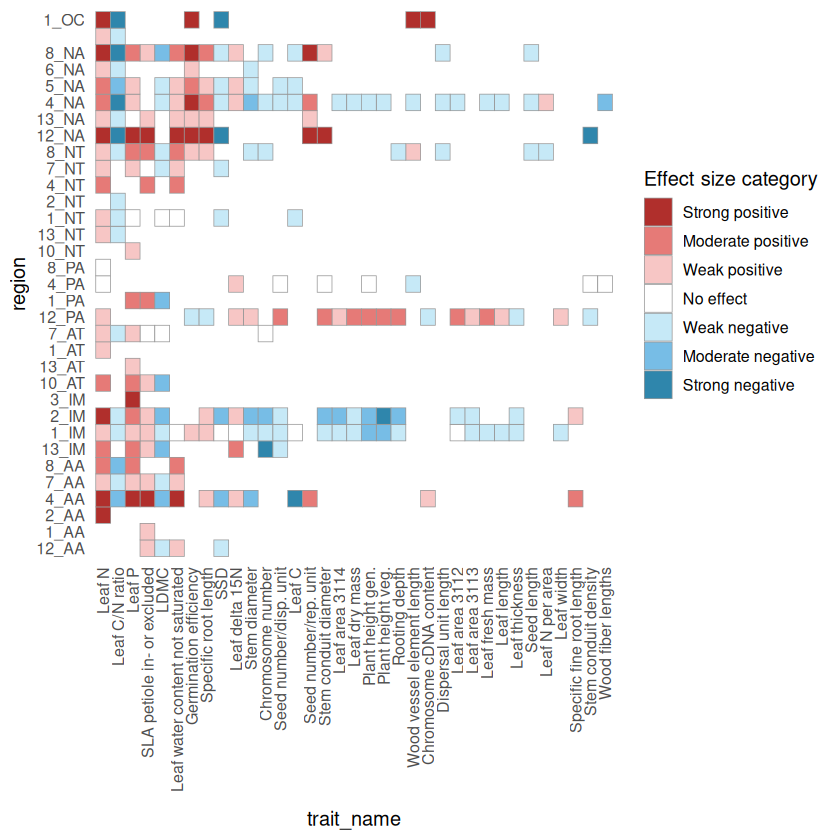

Individual trait shifts in each biome
Contents
Individual trait shifts in each biome#
Set path to include RStudio packages
.libPaths(c("/net/home/swolf/R/x86_64-pc-linux-gnu-library/4.4", .libPaths()))
# read /net/home/swolf/Func_Neo_Phytes/Data/tde202616123616.txt, skip first 3 lines, tab delimited
data <- read.table("/net/home/swolf/Func_Neo_Phytes/Data/tde202616123616.txt", skip = 3, header = TRUE, sep = "\t")
# Define the trait data
trait_ids <- c(4, 6, 13, 14, 15, 21, 26, 27, 46, 47, 50, 55, 78, 95, 138, 144, 145, 146, 163, 169,
223, 224, 237, 281, 282, 289, 297, 351, 614, 1080, 3086, 3106, 3107, 3108, 3109,
3110, 3111, 3112, 3113, 3114, 3115, 3116, 3117, 3120)
filtered_data <- data[data$TraitID %in% trait_ids, ]
# sort data by ObsNum, inverted
filtered_data <- filtered_data[order(-filtered_data$ObsNum), ]
filtered_data
| TraitID | Trait | ObsNum | ObsGRNum | AccSpecNum | X | |
|---|---|---|---|---|---|---|
| <int> | <chr> | <int> | <int> | <int> | <lgl> | |
| 1724 | 3106 | Plant height vegetative | 368479 | 268607 | 35466 | NA |
| 2064 | 26 | Seed dry mass | 317501 | 27134 | 43227 | NA |
| 1031 | 47 | Leaf dry mass per leaf fresh mass (leaf dry matter content, LDMC) | 293469 | 277713 | 9688 | NA |
| 944 | 3117 | Leaf area per leaf dry mass (specific leaf area, SLA or 1/LMA): undefined if petiole is in- or exclu | 249181 | 206176 | 16599 | NA |
| 2315 | 21 | Stem diameter | 215415 | 199436 | 8426 | NA |
| 1024 | 55 | Leaf dry mass (single leaf) | 177383 | 151623 | 8696 | NA |
| 1143 | 14 | Leaf nitrogen (N) content per leaf dry mass | 165142 | 142471 | 13621 | NA |
| 1273 | 46 | Leaf thickness | 126654 | 116389 | 7773 | NA |
| 1319 | 3120 | Leaf water content per leaf dry mass (not saturated) | 114633 | 114633 | 3608 | NA |
| 943 | 3116 | Leaf area per leaf dry mass (specific leaf area, SLA or 1/LMA): petiole included | 105140 | 93329 | 8245 | NA |
| 1330 | 145 | Leaf width | 96570 | 72599 | 10859 | NA |
| 2389 | 4 | Stem specific density (SSD, stem dry mass per stem fresh volume) or wood density | 96095 | 44571 | 12812 | NA |
| 929 | 3114 | Leaf area (in case of compound leaves undefined if leaf or leaflet, undefined if petiole is in- or e | 96078 | 65197 | 8770 | NA |
| 1142 | 50 | Leaf nitrogen (N) content per leaf area | 89709 | 79443 | 10067 | NA |
| 2195 | 224 | Species genotype: chromosome cDNA content | 85668 | 83646 | 6907 | NA |
| 2196 | 223 | Species genotype: chromosome number | 85214 | 74071 | 7916 | NA |
| 1051 | 163 | Leaf fresh mass | 83586 | 82517 | 3442 | NA |
| 942 | 3115 | Leaf area per leaf dry mass (specific leaf area, SLA or 1/LMA): petiole excluded | 82364 | 70925 | 8120 | NA |
| 970 | 13 | Leaf carbon (C) content per leaf dry mass | 77666 | 70380 | 7509 | NA |
| 1184 | 15 | Leaf phosphorus (P) content per leaf dry mass | 73072 | 57689 | 8671 | NA |
| 2072 | 95 | Seed germination rate (germination efficiency) | 71098 | 422 | 15724 | NA |
| 1083 | 144 | Leaf length | 66551 | 44685 | 11500 | NA |
| 933 | 3109 | Leaf area (in case of compound leaves: leaflet, petiole excluded) | 64042 | 58920 | 5029 | NA |
| 931 | 3110 | Leaf area (in case of compound leaves: leaf, petiole included) | 60604 | 57052 | 3990 | NA |
| 930 | 3108 | Leaf area (in case of compound leaves: leaf, petiole excluded) | 48556 | 45162 | 3284 | NA |
| 935 | 3113 | Leaf area (in case of compound leaves: leaflet, undefined if petiole is in- or excluded) | 48331 | 47915 | 11097 | NA |
| 973 | 146 | Leaf carbon/nitrogen (C/N) ratio | 47595 | 44708 | 5843 | NA |
| 1718 | 3107 | Plant height generative | 41669 | 20363 | 3734 | NA |
| 2079 | 27 | Seed length | 27848 | 749 | 3861 | NA |
| 1148 | 78 | Leaf nitrogen (N) isotope signature (delta 15N) | 23956 | 23446 | 3561 | NA |
| 2301 | 281 | Stem conduit diameter (vessels, tracheids) | 23257 | 4194 | 7189 | NA |
| 932 | 3112 | Leaf area (in case of compound leaves: leaf, undefined if petiole in- or excluded) | 22803 | 21349 | 7467 | NA |
| 934 | 3111 | Leaf area (in case of compound leaves: leaflet, petiole included) | 22436 | 18085 | 2929 | NA |
| 2300 | 169 | Stem conduit density (vessels and tracheids) | 21077 | 2190 | 8211 | NA |
| 402 | 237 | Dispersal unit length | 19094 | 165 | 2933 | NA |
| 2579 | 289 | Wood fiber lengths | 16363 | NA | 5777 | NA |
| 2634 | 282 | Wood vessel element length; stem conduit (vessel and tracheids) element length | 15243 | NA | 5757 | NA |
| 2090 | 138 | Seed number per reproducton unit | 14887 | 143 | 1754 | NA |
| 2011 | 6 | Root rooting depth | 11616 | 8019 | 4032 | NA |
| 1935 | 1080 | Root length per root dry mass (specific root length, SRL) | 8330 | 5081 | 720 | NA |
| 2612 | 297 | Wood rays per millimetre (wood ray density) | 7512 | NA | 5038 | NA |
| 699 | 614 | Fine root length per fine root dry mass (specific fine root length, SRL) | 7310 | 5644 | 1308 | NA |
| 2086 | 351 | Seed number per dispersal unit | 2860 | 48 | 2586 | NA |
| 941 | 3086 | Leaf area per leaf dry mass (specific leaf area, SLA or 1/LMA) petiole, rhachis and midrib excluded | 2311 | 2085 | 484 | NA |
Load Data#
# read the aggregated shapefile
library(sf)
wwf_aggregated <- st_read("~/iNaturalist/Data/WWF/wwf_terr_ecos_aggregated.shp")
Linking to GEOS 3.12.1, GDAL 3.8.4, PROJ 9.4.0; sf_use_s2() is TRUE
Reading layer `wwf_terr_ecos_aggregated' from data source
`/net/home/swolf/iNaturalist/Data/WWF/wwf_terr_ecos_aggregated.shp'
using driver `ESRI Shapefile'
Simple feature collection with 64 features and 1 field
Geometry type: MULTIPOLYGON
Dimension: XY
Bounding box: xmin: -180 ymin: -87.26008 xmax: 180 ymax: 83.62313
Geodetic CRS: WGS 84
library(data.table)
dtn = 10
setDTthreads(threads = dtn) #defines how many threads data.table is allowed to use
combined_data = fread("/net/scratch/swolf/GBIF/gbif_res3_try6_CS_wcvp_summary_stats_inkl_pca_mean_log10_notrim_misstree_group.csv")
head(combined_data)
| h3_res3 | group | PC1 | PC2 | PC3 | PC4 | PC5 | count | count_sp | mean_perc_na | ⋯ | X.X223 | X.X237 | X.X614 | X.X351 | X.X6 | X.X95 | X.X138 | X.X1080 | X.X78 | X.X4 |
|---|---|---|---|---|---|---|---|---|---|---|---|---|---|---|---|---|---|---|---|---|
| <chr> | <chr> | <dbl> | <dbl> | <dbl> | <dbl> | <dbl> | <int> | <int> | <dbl> | ⋯ | <dbl> | <dbl> | <dbl> | <dbl> | <dbl> | <dbl> | <dbl> | <dbl> | <dbl> | <dbl> |
| 83001afffffffff | all | -10.340785 | 1.3463123 | -1.7276493 | -1.0482630 | -2.1657556 | 10 | 4 | 5.68 | ⋯ | 33.517 | -0.016 | 3.884 | -0.020 | -0.698 | 85.452 | 2.183 | 3.140 | -0.547 | 0.3330000 |
| 83001afffffffff | native | -10.340785 | 1.3463123 | -1.7276493 | -1.0482630 | -2.1657556 | 10 | 4 | 55.68 | ⋯ | 33.517 | -0.016 | 3.884 | -0.020 | -0.698 | 85.452 | 2.183 | 3.140 | -0.547 | 0.3330000 |
| 83001cfffffffff | all | -9.994814 | -0.2430451 | 0.2367820 | -2.9060144 | -1.0022472 | 1 | 1 | 16.22 | ⋯ | 32.155 | -0.119 | 3.810 | 0.001 | -0.744 | 92.099 | 2.545 | 3.121 | -0.563 | 0.3272027 |
| 83001cfffffffff | native | -10.002619 | -0.3291607 | 0.3134314 | -2.9203937 | -0.9736157 | 1 | 1 | 116.22 | ⋯ | 32.155 | -0.119 | 3.810 | 0.001 | -0.744 | 92.099 | 2.545 | 3.121 | -0.563 | 0.3360682 |
| 83001efffffffff | all | -10.704678 | -0.8306347 | -0.9563224 | 0.2603966 | -1.3077282 | 4 | 3 | 3.38 | ⋯ | 32.650 | 0.122 | 4.005 | 0.003 | -0.699 | 88.269 | 2.311 | 3.671 | -1.933 | 0.4090000 |
| 83001efffffffff | native | -10.704678 | -0.8306347 | -0.9563224 | 0.2603966 | -1.3077282 | 4 | 3 | 3.38 | ⋯ | 32.650 | 0.122 | 4.005 | 0.003 | -0.699 | 88.269 | 2.311 | 3.671 | -1.933 | 0.4090000 |
# Trait names
# Define the trait data
trait_ids <- c(4, 6, 13, 14, 15, 21, 26, 27, 46, 47, 50, 55, 78, 95, 138, 144, 145, 146, 163, 169,
223, 224, 237, 281, 282, 289, 297, 351, 614, 1080, 3086, 3106, 3107, 3108, 3109,
3110, 3111, 3112, 3113, 3114, 3115, 3116, 3117, 3120)
trait_names <- c(
"Stem specific density (SSD, stem dry mass per stem fresh volume) or wood density", "Root rooting depth",
"Leaf carbon (C) content per leaf dry mass", "Leaf nitrogen (N) content per leaf dry mass",
"Leaf phosphorus (P) content per leaf dry mass", "Stem diameter", "Seed dry mass", "Seed length",
"Leaf thickness", "Leaf dry mass per leaf fresh mass (leaf dry matter content, LDMC)",
"Leaf nitrogen (N) content per leaf area", "Leaf dry mass (single leaf)",
"Leaf nitrogen (N) isotope signature (delta 15N)", "Seed germination rate (germination efficiency)",
"Seed number per reproduction unit", "Leaf length", "Leaf width", "Leaf carbon/nitrogen (C/N) ratio",
"Leaf fresh mass", "Stem conduit density (vessels and tracheids)", "Species genotype: chromosome number",
"Species genotype: chromosome cDNA content", "Dispersal unit length", "Stem conduit diameter (vessels, tracheids)",
"Wood vessel element length; stem conduit (vessel and tracheids) element length", "Wood fiber lengths",
"Wood rays per millimetre (wood ray density)", "Seed number per dispersal unit",
"Fine root length per fine root dry mass (specific fine root length, SRL)",
"Root length per root dry mass (specific root length, SRL)",
"Leaf area per leaf dry mass (SLA or 1/LMA) petiole, rhachis and midrib excluded", "Plant height vegetative",
"Plant height generative", "Leaf area (in case of compound leaves: leaf, petiole excluded)",
"Leaf area (in case of compound leaves: leaflet, petiole excluded)",
"Leaf area (in case of compound leaves: leaf, petiole included)",
"Leaf area (in case of compound leaves: leaflet, petiole included)",
"Leaf area (in case of compound leaves: leaf, undefined if petiole in- or excluded)",
"Leaf area (in case of compound leaves: leaflet, undefined if petiole is in- or excluded)",
"Leaf area (in case of compound leaves undefined if leaf or leaflet, if petiole is in- or excluded)",
"Leaf area per leaf dry mass (SLA or 1/LMA): petiole excluded",
"Leaf area per leaf dry mass (SLA or 1/LMA): petiole included",
"Leaf area per leaf dry mass (SLA or 1/LMA): undefined if petiole is in- or excluded",
"Leaf water content per leaf dry mass (not saturated)"
)
short_names <- c(
"SSD",
"Rooting depth",
"Leaf C",
"Leaf N",
"Leaf P",
"Stem diameter",
"Seed dry mass",
"Seed length",
"Leaf thickness",
"LDMC",
"Leaf N per area",
"Leaf dry mass",
"Leaf delta 15N",
"Germination efficiency",
"Seed number/rep. unit",
"Leaf length",
"Leaf width",
"Leaf C/N ratio",
"Leaf fresh mass",
"Stem conduit density",
"Chromosome number",
"Chromosome cDNA content",
"Dispersal unit length",
"Stem conduit diameter",
"Wood vessel element length",
"Wood fiber lengths",
"Wood ray density",
"Seed number/disp. unit",
"Specific fine root length",
"Specific root length",
"SLA midrib excl.",
"Plant height veg.",
"Plant height gen.",
"Leaf area 3108 ",
"Leaf area 3109",
"Leaf area 3110",
"Leaf area 3111",
"Leaf area 3112",
"Leaf area 3113",
"Leaf area 3114",
"SLA petiole excl.",
"SLA petiole incl.",
"SLA petiole in- or excluded",
"Leaf water content not saturated"
)
sPlotOpen_name <- c(
"SSD", # SSD
"", # Rooting depth
"Leaf.C", # Leaf C
"Leaf.N.per.mass", # Leaf N
"Leaf.P", # Leaf P
"", # Stem diameter
"Seed.mass", # Seed dry mass
"Seed.length", # Seed length
"", # Leaf thickness
"LDMC", # LDMC
"Leaf.N.per.area", # Leaf N per area
"", # Leaf dry mass
"Leaf.delta15N", # Leaf delta 15N
"", # Germination efficiency
"Seeds.per.rep..unit", # Seed number/rep. unit
"", # Leaf length
"", # Leaf width
"", # Leaf C/N ratio
"Leaf.fresh.mass", # Leaf fresh mass
"Stem.conduit.density", # Stem conduit density
"", # Chromosome number
"", # Chromosome cDNA content
"Dispersal.unit.length", # Dispersal unit length
"", # Stem conduit diameter
"Conduit.element.length",# Wood vessel element length
"", # Wood fiber lengths
"", # Wood ray density
"", # Seed number/disp. unit
"", # Specific fine root length
"", # Specific root length
"", # SLA midrib excl.
"Plant.Height", # Plant height veg.
"", # Plant height gen.
"", # Leaf area 3108
"", # Leaf area 3109
"", # Leaf area 3110
"", # Leaf area 3111
"", # Leaf area 3112
"", # Leaf area 3113
"Leaf.Area", # Leaf area 3114
"", # SLA petiole excl.
"", # SLA petiole incl.
"SLA", # SLA petiole in- or excluded
"" # Leaf water content not saturated
)
unit_names <- c("g/cm3", "m", "mg/g", "mg/g", "mg/g", "m", "mg", "mm", "mm", "g/g", "g m-2", "mg", "per mill",
"%", "number", "mm", "cm", "g g-1", "g", "mm-2", "n", "pg", "mm", "micro m", "micro m",
"micro m", "1/mm", "number", "cm/g", "cm/g", "mm2/mg", "m", "m", "mm2", "mm2", "mm2",
"mm2", "mm2", "mm2", "mm2", "mm2/mg", "mm2/mg", "mm2/mg", "g(W)/g(DM)")
# add "X.X" prefix and "." suffix to TraitID
trait_ids_try6 <- paste0("X.X", trait_ids)
# Create the dataframe
traits <- data.frame(TraitID = trait_ids, TraitID_TRY6 = trait_ids_try6, TraitName = trait_names, ShortName = short_names, sPlotOpenName=sPlotOpen_name, UnitName = unit_names)
# View the dataframe
traits
| TraitID | TraitID_TRY6 | TraitName | ShortName | sPlotOpenName | UnitName |
|---|---|---|---|---|---|
| <dbl> | <chr> | <chr> | <chr> | <chr> | <chr> |
| 4 | X.X4 | Stem specific density (SSD, stem dry mass per stem fresh volume) or wood density | SSD | SSD | g/cm3 |
| 6 | X.X6 | Root rooting depth | Rooting depth | m | |
| 13 | X.X13 | Leaf carbon (C) content per leaf dry mass | Leaf C | Leaf.C | mg/g |
| 14 | X.X14 | Leaf nitrogen (N) content per leaf dry mass | Leaf N | Leaf.N.per.mass | mg/g |
| 15 | X.X15 | Leaf phosphorus (P) content per leaf dry mass | Leaf P | Leaf.P | mg/g |
| 21 | X.X21 | Stem diameter | Stem diameter | m | |
| 26 | X.X26 | Seed dry mass | Seed dry mass | Seed.mass | mg |
| 27 | X.X27 | Seed length | Seed length | Seed.length | mm |
| 46 | X.X46 | Leaf thickness | Leaf thickness | mm | |
| 47 | X.X47 | Leaf dry mass per leaf fresh mass (leaf dry matter content, LDMC) | LDMC | LDMC | g/g |
| 50 | X.X50 | Leaf nitrogen (N) content per leaf area | Leaf N per area | Leaf.N.per.area | g m-2 |
| 55 | X.X55 | Leaf dry mass (single leaf) | Leaf dry mass | mg | |
| 78 | X.X78 | Leaf nitrogen (N) isotope signature (delta 15N) | Leaf delta 15N | Leaf.delta15N | per mill |
| 95 | X.X95 | Seed germination rate (germination efficiency) | Germination efficiency | % | |
| 138 | X.X138 | Seed number per reproduction unit | Seed number/rep. unit | Seeds.per.rep..unit | number |
| 144 | X.X144 | Leaf length | Leaf length | mm | |
| 145 | X.X145 | Leaf width | Leaf width | cm | |
| 146 | X.X146 | Leaf carbon/nitrogen (C/N) ratio | Leaf C/N ratio | g g-1 | |
| 163 | X.X163 | Leaf fresh mass | Leaf fresh mass | Leaf.fresh.mass | g |
| 169 | X.X169 | Stem conduit density (vessels and tracheids) | Stem conduit density | Stem.conduit.density | mm-2 |
| 223 | X.X223 | Species genotype: chromosome number | Chromosome number | n | |
| 224 | X.X224 | Species genotype: chromosome cDNA content | Chromosome cDNA content | pg | |
| 237 | X.X237 | Dispersal unit length | Dispersal unit length | Dispersal.unit.length | mm |
| 281 | X.X281 | Stem conduit diameter (vessels, tracheids) | Stem conduit diameter | micro m | |
| 282 | X.X282 | Wood vessel element length; stem conduit (vessel and tracheids) element length | Wood vessel element length | Conduit.element.length | micro m |
| 289 | X.X289 | Wood fiber lengths | Wood fiber lengths | micro m | |
| 297 | X.X297 | Wood rays per millimetre (wood ray density) | Wood ray density | 1/mm | |
| 351 | X.X351 | Seed number per dispersal unit | Seed number/disp. unit | number | |
| 614 | X.X614 | Fine root length per fine root dry mass (specific fine root length, SRL) | Specific fine root length | cm/g | |
| 1080 | X.X1080 | Root length per root dry mass (specific root length, SRL) | Specific root length | cm/g | |
| 3086 | X.X3086 | Leaf area per leaf dry mass (SLA or 1/LMA) petiole, rhachis and midrib excluded | SLA midrib excl. | mm2/mg | |
| 3106 | X.X3106 | Plant height vegetative | Plant height veg. | Plant.Height | m |
| 3107 | X.X3107 | Plant height generative | Plant height gen. | m | |
| 3108 | X.X3108 | Leaf area (in case of compound leaves: leaf, petiole excluded) | Leaf area 3108 | mm2 | |
| 3109 | X.X3109 | Leaf area (in case of compound leaves: leaflet, petiole excluded) | Leaf area 3109 | mm2 | |
| 3110 | X.X3110 | Leaf area (in case of compound leaves: leaf, petiole included) | Leaf area 3110 | mm2 | |
| 3111 | X.X3111 | Leaf area (in case of compound leaves: leaflet, petiole included) | Leaf area 3111 | mm2 | |
| 3112 | X.X3112 | Leaf area (in case of compound leaves: leaf, undefined if petiole in- or excluded) | Leaf area 3112 | mm2 | |
| 3113 | X.X3113 | Leaf area (in case of compound leaves: leaflet, undefined if petiole is in- or excluded) | Leaf area 3113 | mm2 | |
| 3114 | X.X3114 | Leaf area (in case of compound leaves undefined if leaf or leaflet, if petiole is in- or excluded) | Leaf area 3114 | Leaf.Area | mm2 |
| 3115 | X.X3115 | Leaf area per leaf dry mass (SLA or 1/LMA): petiole excluded | SLA petiole excl. | mm2/mg | |
| 3116 | X.X3116 | Leaf area per leaf dry mass (SLA or 1/LMA): petiole included | SLA petiole incl. | mm2/mg | |
| 3117 | X.X3117 | Leaf area per leaf dry mass (SLA or 1/LMA): undefined if petiole is in- or excluded | SLA petiole in- or excluded | SLA | mm2/mg |
| 3120 | X.X3120 | Leaf water content per leaf dry mass (not saturated) | Leaf water content not saturated | g(W)/g(DM) |
write.csv(traits, file="~/Func_Neo_Phytes/Data/trait_info.csv", row.names=FALSE)
traits
| TraitID | TraitID_TRY6 | TraitName | ShortName | sPlotOpenName | UnitName |
|---|---|---|---|---|---|
| <dbl> | <chr> | <chr> | <chr> | <chr> | <chr> |
| 4 | X.X4. | Stem specific density (SSD, stem dry mass per stem fresh volume) or wood density | SSD | SSD | g/cm3 |
| 6 | X.X6. | Root rooting depth | Rooting depth | m | |
| 13 | X.X13. | Leaf carbon (C) content per leaf dry mass | Leaf C | Leaf.C | mg/g |
| 14 | X.X14. | Leaf nitrogen (N) content per leaf dry mass | Leaf N | Leaf.N.per.mass | mg/g |
| 15 | X.X15. | Leaf phosphorus (P) content per leaf dry mass | Leaf P | Leaf.P | mg/g |
| 21 | X.X21. | Stem diameter | Stem diameter | m | |
| 26 | X.X26. | Seed dry mass | Seed dry mass | Seed.mass | mg |
| 27 | X.X27. | Seed length | Seed length | Seed.length | mm |
| 46 | X.X46. | Leaf thickness | Leaf thickness | mm | |
| 47 | X.X47. | Leaf dry mass per leaf fresh mass (leaf dry matter content, LDMC) | LDMC | LDMC | g/g |
| 50 | X.X50. | Leaf nitrogen (N) content per leaf area | Leaf N per area | Leaf.N.per.area | g m-2 |
| 55 | X.X55. | Leaf dry mass (single leaf) | Leaf dry mass | mg | |
| 78 | X.X78. | Leaf nitrogen (N) isotope signature (delta 15N) | Leaf delta 15N | Leaf.delta15N | per mill |
| 95 | X.X95. | Seed germination rate (germination efficiency) | Germination efficiency | % | |
| 138 | X.X138. | Seed number per reproduction unit | Seed number/rep. unit | Seeds.per.rep..unit | number |
| 144 | X.X144. | Leaf length | Leaf length | mm | |
| 145 | X.X145. | Leaf width | Leaf width | cm | |
| 146 | X.X146. | Leaf carbon/nitrogen (C/N) ratio | Leaf C/N ratio | g g-1 | |
| 163 | X.X163. | Leaf fresh mass | Leaf fresh mass | Leaf.fresh.mass | g |
| 169 | X.X169. | Stem conduit density (vessels and tracheids) | Stem conduit density | Stem.conduit.density | mm-2 |
| 223 | X.X223. | Species genotype: chromosome number | Chromosome number | n | |
| 224 | X.X224. | Species genotype: chromosome cDNA content | Chromosome cDNA content | pg | |
| 237 | X.X237. | Dispersal unit length | Dispersal unit length | Dispersal.unit.length | mm |
| 281 | X.X281. | Stem conduit diameter (vessels, tracheids) | Stem conduit diameter | micro m | |
| 282 | X.X282. | Wood vessel element length; stem conduit (vessel and tracheids) element length | Wood vessel element length | Conduit.element.length | micro m |
| 289 | X.X289. | Wood fiber lengths | Wood fiber lengths | micro m | |
| 297 | X.X297. | Wood rays per millimetre (wood ray density) | Wood ray density | 1/mm | |
| 351 | X.X351. | Seed number per dispersal unit | Seed number/disp. unit | number | |
| 614 | X.X614. | Fine root length per fine root dry mass (specific fine root length, SRL) | Specific fine root length | cm/g | |
| 1080 | X.X1080. | Root length per root dry mass (specific root length, SRL) | Specific root length | cm/g | |
| 3086 | X.X3086. | Leaf area per leaf dry mass (SLA or 1/LMA) petiole, rhachis and midrib excluded | SLA midrib excl. | mm2/mg | |
| 3106 | X.X3106. | Plant height vegetative | Plant height veg. | Plant.Height | m |
| 3107 | X.X3107. | Plant height generative | Plant height gen. | m | |
| 3108 | X.X3108. | Leaf area (in case of compound leaves: leaf, petiole excluded) | Leaf area 3108 | mm2 | |
| 3109 | X.X3109. | Leaf area (in case of compound leaves: leaflet, petiole excluded) | Leaf area 3109 | mm2 | |
| 3110 | X.X3110. | Leaf area (in case of compound leaves: leaf, petiole included) | Leaf area 3110 | mm2 | |
| 3111 | X.X3111. | Leaf area (in case of compound leaves: leaflet, petiole included) | Leaf area 3111 | mm2 | |
| 3112 | X.X3112. | Leaf area (in case of compound leaves: leaf, undefined if petiole in- or excluded) | Leaf area 3112 | mm2 | |
| 3113 | X.X3113. | Leaf area (in case of compound leaves: leaflet, undefined if petiole is in- or excluded) | Leaf area 3113 | mm2 | |
| 3114 | X.X3114. | Leaf area (in case of compound leaves undefined if leaf or leaflet, if petiole is in- or excluded) | Leaf area 3114 | Leaf.Area | mm2 |
| 3115 | X.X3115. | Leaf area per leaf dry mass (SLA or 1/LMA): petiole excluded | SLA petiole excl. | mm2/mg | |
| 3116 | X.X3116. | Leaf area per leaf dry mass (SLA or 1/LMA): petiole included | SLA petiole incl. | mm2/mg | |
| 3117 | X.X3117. | Leaf area per leaf dry mass (SLA or 1/LMA): undefined if petiole is in- or excluded | SLA petiole in- or excluded | SLA | mm2/mg |
| 3120 | X.X3120. | Leaf water content per leaf dry mass (not saturated) | Leaf water content not saturated | g(W)/g(DM) |
leaf_traits <- traits[startsWith(traits$ShortName, "Leaf area"), ]
leaf_traits_ids <- leaf_traits$TraitID_TRY6
print(leaf_traits_ids)
[1] "X.X3108" "X.X3109" "X.X3110" "X.X3111" "X.X3112" "X.X3113" "X.X3114"
valid_leaf_trait_ids <- leaf_traits_ids[leaf_traits_ids %in% colnames(combined_data)]
valid_leaf_trait_ids
- 'X.X3112'
- 'X.X3113'
- 'X.X3114'
sla_traits <- traits[startsWith(traits$ShortName, "SLA"), ]
sla_traits_ids <- sla_traits$TraitID_TRY6
print(sla_traits_ids)
[1] "X.X3086" "X.X3115" "X.X3116" "X.X3117"
valid_sla_trait_ids <- sla_traits_ids[sla_traits_ids %in% colnames(combined_data)]
valid_sla_trait_ids
'X.X3117'
# print colnames of combined_data that start with "X.X" and end with "."
dim(traits)
length(colnames(combined_data)[startsWith(colnames(combined_data), "X.X") & endsWith(colnames(combined_data), ".")])
- 44
- 6
0
combined_data <- fread("/net/scratch/swolf/GBIF/gbif_res3_try6_CS_wcvp_summary_stats_inkl_pca_mean_group_region_log10_notrim_misstree.csv")
Significance Test for Trait shifts#
trait_columns <- colnames(combined_data)[startsWith(colnames(combined_data), "X")]
#trait_columns <- c(trait_columns, "PC1", "PC2")
unpaired_wilcoxon_results <- combined_data %>%
group_by(region) %>%
summarise(
across(
all_of(trait_columns),
~ {
group_all <- .x[group == "all"]
group_native <- .x[group == "native"]
if (length(na.omit(group_all)) > 1 && length(na.omit(group_native)) > 1) {
wilcox.test(group_all, group_native, paired = FALSE)$p.value
} else {
NA # Return NA if there are not enough observations
}
},
.names = "wilcox_p_value_{col}"
)
)
Warning message:
“There were 697 warnings in `summarise()`.
The first warning was:
ℹ In argument: `across(...)`.
ℹ In group 2: `region = "10_AA"`.
Caused by warning in `wilcox.test.default()`:
! cannot compute exact p-value with ties
ℹ Run `dplyr::last_dplyr_warnings()` to see the 696 remaining warnings.”
# new df with adjusted p-values from unpaired_wilcoxon_results as * ** and *** and ns
significance_levels <- unpaired_wilcoxon_results %>%
mutate(across(
starts_with("wilcox_p_value_"),
~ p.adjust(.x, method = "BH"),
.names = "adjusted_{col}"
)) %>%
mutate(across(
starts_with("adjusted_wilcox_p_value_"),
~ case_when(
.x <= 0.001 ~ "***",
.x <= 0.01 ~ "**",
.x <= 0.05 ~ "*",
TRUE ~ ""
),
.names = "sig_{col}"
)) %>%
dplyr::select(region, starts_with("sig_"))
# remove from significance_levels columns names the pattern "sig_adjusted_wilcox_p_value_"
significance_levels <- significance_levels %>%
rename_with(~ gsub("sig_adjusted_wilcox_p_value_", "", .), starts_with("sig_adjusted_wilcox_p_value_"))
significance_levels <- as.data.frame(significance_levels)
significance_levels
| region | X.X3117 | X.X14 | X.X50 | X.X146 | X.X3120 | X.X224 | X.X297 | X.X21 | X.X13 | ⋯ | X.X223 | X.X237 | X.X614 | X.X351 | X.X6 | X.X95 | X.X138 | X.X1080 | X.X78 | X.X4 |
|---|---|---|---|---|---|---|---|---|---|---|---|---|---|---|---|---|---|---|---|---|
| <chr> | <chr> | <chr> | <chr> | <chr> | <chr> | <chr> | <chr> | <chr> | <chr> | ⋯ | <chr> | <chr> | <chr> | <chr> | <chr> | <chr> | <chr> | <chr> | <chr> | <chr> |
| * | * | ⋯ | ||||||||||||||||||
| 10_AA | ⋯ | |||||||||||||||||||
| 10_AT | * | *** | ⋯ | |||||||||||||||||
| 10_IM | ⋯ | |||||||||||||||||||
| 10_NT | ⋯ | |||||||||||||||||||
| 10_PA | ⋯ | |||||||||||||||||||
| 11_AA | ⋯ | |||||||||||||||||||
| 11_NA | ⋯ | |||||||||||||||||||
| 11_PA | ⋯ | |||||||||||||||||||
| 12_AA | * | * | ⋯ | * | ||||||||||||||||
| 12_AT | ⋯ | |||||||||||||||||||
| 12_NA | * | *** | * | * | ⋯ | ** | ** | ** | ** | |||||||||||
| 12_NT | ⋯ | |||||||||||||||||||
| 12_PA | ** | ** | *** | ⋯ | *** | *** | ** | *** | *** | |||||||||||
| 13_AA | ⋯ | |||||||||||||||||||
| 13_AT | ⋯ | |||||||||||||||||||
| 13_IM | * | *** | ⋯ | *** | * | *** | ||||||||||||||
| 13_NA | * | * | * | * | ⋯ | ** | ** | ** | ||||||||||||
| 13_NT | *** | * | ⋯ | |||||||||||||||||
| 13_PA | ⋯ | |||||||||||||||||||
| 14_AA | ⋯ | |||||||||||||||||||
| 14_AT | ⋯ | |||||||||||||||||||
| 14_IM | ⋯ | |||||||||||||||||||
| 14_NT | ⋯ | |||||||||||||||||||
| 1_AA | * | ⋯ | ||||||||||||||||||
| 1_AT | ** | ⋯ | ||||||||||||||||||
| 1_IM | *** | *** | *** | * | *** | * | ⋯ | * | *** | *** | *** | ** | * | |||||||
| 1_NT | *** | ** | * | ** | ⋯ | ** | ||||||||||||||
| 1_OC | * | * | * | ⋯ | * | * | ||||||||||||||
| 1_PA | * | ⋯ | ||||||||||||||||||
| ⋮ | ⋮ | ⋮ | ⋮ | ⋮ | ⋮ | ⋮ | ⋮ | ⋮ | ⋮ | ⋱ | ⋮ | ⋮ | ⋮ | ⋮ | ⋮ | ⋮ | ⋮ | ⋮ | ⋮ | ⋮ |
| 2_NA | ⋯ | |||||||||||||||||||
| 2_NT | * | ⋯ | ||||||||||||||||||
| 2_OC | ⋯ | |||||||||||||||||||
| 3_IM | ⋯ | |||||||||||||||||||
| 3_NA | ⋯ | |||||||||||||||||||
| 3_NT | ⋯ | |||||||||||||||||||
| 4_AA | *** | *** | *** | *** | * | * | *** | ⋯ | *** | ** | * | * | *** | |||||||
| 4_IM | ⋯ | |||||||||||||||||||
| 4_NA | *** | *** | *** | * | *** | ** | ⋯ | *** | *** | * | *** | *** | *** | ** | *** | |||||
| 4_NT | * | * | * | ⋯ | ||||||||||||||||
| 4_PA | ** | ⋯ | * | *** | ||||||||||||||||
| 5_IM | ⋯ | |||||||||||||||||||
| 5_NA | *** | *** | *** | * | * | ⋯ | * | *** | ** | * | ** | |||||||||
| 5_PA | ⋯ | |||||||||||||||||||
| 6_NA | ** | * | * | ⋯ | * | |||||||||||||||
| 6_PA | ⋯ | |||||||||||||||||||
| 7_AA | * | *** | * | ** | ⋯ | |||||||||||||||
| 7_AT | * | *** | ** | ⋯ | * | |||||||||||||||
| 7_IM | ⋯ | |||||||||||||||||||
| 7_NA | ⋯ | |||||||||||||||||||
| 7_NT | * | * | ⋯ | * | ||||||||||||||||
| 8_AA | ** | * | * | ⋯ | ||||||||||||||||
| 8_AT | ⋯ | |||||||||||||||||||
| 8_NA | ** | *** | *** | *** | *** | ⋯ | *** | *** | *** | *** | *** | *** | *** | |||||||
| 8_NT | *** | *** | * | *** | *** | *** | ⋯ | * | *** | * | *** | ** | ||||||||
| 8_PA | * | ⋯ | ||||||||||||||||||
| 9_AT | ⋯ | |||||||||||||||||||
| 9_IM | ⋯ | |||||||||||||||||||
| 9_NT | ⋯ | |||||||||||||||||||
| 9_PA | ⋯ |
Effect Sizes#
library(dplyr)
library(effsize) # For Cliff's Delta
# Initialize an empty list to store results
cliffs_delta_results <- list()
# Get all trait columns that start with "X"
trait_columns <- colnames(combined_data)[startsWith(colnames(combined_data), "X")]
# Loop over all unique regions in combined_data
for (current_region in unique(combined_data$region)) {
# Filter data for the current region
filtered_data <- combined_data %>%
filter(region == current_region & group %in% c("all", "native"))
# Skip if there is insufficient data for the test
if (nrow(filtered_data) < 2) {
next
}
# Initialize a list to store Cliff's Delta for each trait
region_results <- list()
# Loop over all trait columns
for (trait in trait_columns) {
# Calculate Cliff's Delta for the current trait
cliffs_delta <- tryCatch(
{
effsize::cliff.delta(
filtered_data[[trait]][filtered_data$group == "all"],
filtered_data[[trait]][filtered_data$group == "native"]
)$estimate
},
error = function(e) NA
)
# Store the result
region_results[[trait]] <- cliffs_delta
}
# Combine results for the current region into a data frame
cliffs_delta_results[[current_region]] <- data.frame(
region = current_region,
t(region_results) # Transpose the list to create columns for each trait
)
}
# Combine all results into a single data frame
cliffs_delta_results_df <- bind_rows(cliffs_delta_results)
# Rename columns to include "effect_" prefix, except for the "region" column
colnames(cliffs_delta_results_df)[-1] <- paste0("effect_", colnames(cliffs_delta_results_df)[-1])
head(cliffs_delta_results_df)
Warning message in cliff.delta.default(filtered_data[[trait]][filtered_data$group == :
“The samples are fully disjoint, using approximate Confidence Interval estimation”
Warning message in cliff.delta.default(filtered_data[[trait]][filtered_data$group == :
“The samples are fully disjoint, using approximate Confidence Interval estimation”
Warning message in cliff.delta.default(filtered_data[[trait]][filtered_data$group == :
“The samples are fully disjoint, using approximate Confidence Interval estimation”
Warning message in cliff.delta.default(filtered_data[[trait]][filtered_data$group == :
“The samples are fully disjoint, using approximate Confidence Interval estimation”
Warning message in cliff.delta.default(filtered_data[[trait]][filtered_data$group == :
“The samples are fully disjoint, using approximate Confidence Interval estimation”
Warning message in cliff.delta.default(filtered_data[[trait]][filtered_data$group == :
“The samples are fully disjoint, using approximate Confidence Interval estimation”
| region | effect_X.X3117 | effect_X.X14 | effect_X.X50 | effect_X.X146 | effect_X.X3120 | effect_X.X224 | effect_X.X297 | effect_X.X21 | effect_X.X13 | ⋯ | effect_X.X223 | effect_X.X237 | effect_X.X614 | effect_X.X351 | effect_X.X6 | effect_X.X95 | effect_X.X138 | effect_X.X1080 | effect_X.X78 | effect_X.X4 | |
|---|---|---|---|---|---|---|---|---|---|---|---|---|---|---|---|---|---|---|---|---|---|
| <chr> | <named list> | <named list> | <named list> | <named list> | <named list> | <named list> | <named list> | <named list> | <named list> | ⋯ | <named list> | <named list> | <named list> | <named list> | <named list> | <named list> | <named list> | <named list> | <named list> | <named list> | |
| 1 | 11_PA | 0.0119233 | 0.02419728 | -0.00119233 | -0.0163279 | 0.0108993 | 0.006129978 | -0.01304549 | -0.005695128 | -0.01162872 | ⋯ | -0.008654912 | 0.005049867 | 0.004530853 | -0.001557042 | 0.01123596 | -0.003408661 | 0.01227398 | 0.0007013705 | 0.007616883 | 0.00162718 |
| 2 | 0.1201271 | 0.1447073 | 0.0150804 | -0.1277721 | 0.005935388 | 0.05064434 | 0.01075789 | 0.01119337 | 0.008483734 | ⋯ | -0.09791778 | -0.03361236 | -0.004145094 | -0.1322398 | -0.04278963 | 0.03006403 | 0.01514492 | -0.08383736 | 0.06617635 | -0.05528943 | |
| 3 | 11_NA | 0.003946509 | 0.02171034 | 0.0002358833 | -0.01451589 | 0.007330527 | 0.002930396 | 0.001905211 | -0.01830817 | -0.01061475 | ⋯ | -0.008500871 | -0.0003084628 | -0.000753012 | 0.001242924 | 0.005289229 | 0.007022064 | 0.009117796 | 0.00823777 | 0.01471549 | -0.005389026 |
| 4 | 6_PA | 0.02319181 | 0.05717209 | 0.007775839 | -0.04217137 | 0.03432225 | -0.005544865 | -0.03987526 | -0.003020771 | -0.03180359 | ⋯ | -0.02026332 | 0.02232331 | 0.008527639 | -0.008115099 | 0.024538 | 0.0199512 | 0.02397075 | -0.009149163 | 0.02775689 | -0.00604697 |
| 5 | 5_PA | 0.03621338 | 0.1506316 | 0.04340231 | -0.08882021 | 0.02452298 | -0.05529428 | 0.01699812 | -0.04158828 | -0.04958345 | ⋯ | -0.04958345 | -0.01437786 | 0.0712846 | 0.01061543 | 0.02747917 | 0.02694168 | 0.04138672 | 0.02620263 | 0.1416958 | 0.006382693 |
| 6 | 4_PA | 0.04630322 | 0.09787128 | 0.06582525 | -0.01573785 | 0.02931876 | -0.05673188 | -0.05946778 | 0.05296865 | 0.01322368 | ⋯ | -0.05957618 | 0.06758799 | 0.0263636 | 0.08423862 | 0.06841332 | -0.01783935 | 0.01712981 | -0.01126631 | 0.1454125 | -0.01034244 |
# filter effect_sizes based on significance_levels that are "*", "**", or "***"
filtered_effect_sizes <- cliffs_delta_results_df %>%
left_join(significance_levels, by = "region") %>%
mutate(across(
starts_with("effect_"),
~ {
sig_col <- paste0(gsub("effect_", "", cur_column()))
sig_values <- get(sig_col)
ifelse(sig_values %in% c("*", "**", "***"), .x, NA )
}
))
# remove columns that start with "X"
filtered_effect_sizes <- filtered_effect_sizes %>%
dplyr::select(region, starts_with("effect_"))
# remove "effect_" prefix from column names
colnames(filtered_effect_sizes)[-1] <- gsub("effect_", "", colnames(filtered_effect_sizes)[-1])
filtered_effect_sizes
| region | X.X3117 | X.X14 | X.X50 | X.X146 | X.X3120 | X.X224 | X.X297 | X.X21 | X.X13 | ⋯ | X.X223 | X.X237 | X.X614 | X.X351 | X.X6 | X.X95 | X.X138 | X.X1080 | X.X78 | X.X4 |
|---|---|---|---|---|---|---|---|---|---|---|---|---|---|---|---|---|---|---|---|---|
| <chr> | <list> | <list> | <list> | <list> | <list> | <list> | <lgl> | <list> | <list> | ⋯ | <list> | <list> | <list> | <list> | <list> | <list> | <list> | <list> | <list> | <list> |
| 11_PA | NA | NA | NA | NA | NA | NA | NA | NA | NA | ⋯ | NA | NA | NA | NA | NA | NA | NA | NA | NA | NA |
| NA | 0.1447073 | NA | -0.1277721 | NA | NA | NA | NA | NA | ⋯ | NA | NA | NA | NA | NA | NA | NA | NA | NA | NA | |
| 11_NA | NA | NA | NA | NA | NA | NA | NA | NA | NA | ⋯ | NA | NA | NA | NA | NA | NA | NA | NA | NA | NA |
| 6_PA | NA | NA | NA | NA | NA | NA | NA | NA | NA | ⋯ | NA | NA | NA | NA | NA | NA | NA | NA | NA | NA |
| 5_PA | NA | NA | NA | NA | NA | NA | NA | NA | NA | ⋯ | NA | NA | NA | NA | NA | NA | NA | NA | NA | NA |
| 4_PA | NA | 0.09787128 | NA | NA | NA | NA | NA | NA | NA | ⋯ | NA | NA | NA | 0.08423862 | NA | NA | NA | NA | 0.1454125 | NA |
| 8_PA | NA | 0.1075051 | NA | NA | NA | NA | NA | NA | NA | ⋯ | NA | NA | NA | NA | NA | NA | NA | NA | NA | NA |
| 6_NA | NA | 0.1309828 | NA | -0.1124021 | NA | NA | NA | -0.1391852 | NA | ⋯ | NA | NA | NA | NA | NA | 0.1382332 | NA | NA | NA | NA |
| 5_NA | NA | 0.4033741 | NA | -0.371749 | 0.2556171 | NA | NA | -0.148892 | -0.1646853 | ⋯ | NA | NA | NA | -0.1745152 | NA | 0.2997076 | NA | 0.1756502 | 0.166609 | -0.196849 |
| 13_PA | NA | NA | NA | NA | NA | NA | NA | NA | NA | ⋯ | NA | NA | NA | NA | NA | NA | NA | NA | NA | NA |
| 8_NA | 0.196071 | 0.7127804 | NA | -0.5918287 | 0.3496496 | NA | NA | NA | -0.2577607 | ⋯ | -0.2124791 | -0.232985 | NA | NA | NA | 0.4807941 | 0.4348066 | 0.3061586 | 0.2436942 | -0.2335015 |
| 9_PA | NA | NA | NA | NA | NA | NA | NA | NA | NA | ⋯ | NA | NA | NA | NA | NA | NA | NA | NA | NA | NA |
| 12_PA | NA | 0.1623942 | NA | NA | NA | -0.2078538 | NA | 0.2612181 | NA | ⋯ | NA | NA | NA | 0.3487088 | 0.2976461 | -0.1907113 | NA | -0.2741068 | 0.2236155 | NA |
| 10_PA | NA | NA | NA | NA | NA | NA | NA | NA | NA | ⋯ | NA | NA | NA | NA | NA | NA | NA | NA | NA | NA |
| 4_IM | NA | NA | NA | NA | NA | NA | NA | NA | NA | ⋯ | NA | NA | NA | NA | NA | NA | NA | NA | NA | NA |
| 5_IM | NA | NA | NA | NA | NA | NA | NA | NA | NA | ⋯ | NA | NA | NA | NA | NA | NA | NA | NA | NA | NA |
| 4_NA | NA | 0.4263883 | 0.261564 | -0.480175 | 0.1421294 | NA | NA | -0.3604322 | -0.1948885 | ⋯ | -0.2450933 | -0.2594207 | NA | -0.1567064 | NA | 0.675636 | 0.3490407 | 0.2972652 | 0.184642 | -0.219022 |
| 13_NA | 0.1602208 | 0.1725344 | NA | -0.1845589 | 0.1843855 | NA | NA | NA | NA | ⋯ | NA | NA | NA | NA | NA | 0.217713 | 0.2227136 | 0.2269337 | NA | NA |
| 12_NA | 0.5617284 | 0.7901235 | NA | -0.5555556 | 0.5277778 | NA | NA | NA | NA | ⋯ | NA | NA | NA | NA | NA | 0.6975309 | 0.7808642 | 0.6450617 | NA | -0.6728395 |
| 1_IM | 0.2452992 | 0.2724 | NA | -0.1891273 | 0.1072826 | NA | NA | -0.197395 | 0.09999339 | ⋯ | -0.1163603 | NA | NA | -0.2599736 | -0.2382116 | 0.1573719 | NA | 0.1162711 | NA | -0.1076298 |
| 3_IM | NA | NA | NA | NA | NA | NA | NA | NA | NA | ⋯ | NA | NA | NA | NA | NA | NA | NA | NA | NA | NA |
| 2_IM | 0.2647633 | 0.4674168 | NA | -0.2423907 | NA | NA | NA | -0.4081686 | NA | ⋯ | -0.3634886 | NA | 0.2417404 | -0.2443418 | -0.3516519 | NA | NA | 0.2686004 | 0.2376431 | -0.2825182 |
| 13_IM | 0.2596122 | 0.3275346 | NA | NA | NA | NA | NA | NA | NA | ⋯ | -0.4344598 | NA | NA | -0.2588366 | NA | NA | NA | NA | 0.3633241 | NA |
| 7_IM | NA | NA | NA | NA | NA | NA | NA | NA | NA | ⋯ | NA | NA | NA | NA | NA | NA | NA | NA | NA | NA |
| 1_PA | 0.3174603 | NA | NA | NA | NA | NA | NA | NA | NA | ⋯ | NA | NA | NA | NA | NA | NA | NA | NA | NA | NA |
| 9_IM | NA | NA | NA | NA | NA | NA | NA | NA | NA | ⋯ | NA | NA | NA | NA | NA | NA | NA | NA | NA | NA |
| 13_AT | NA | NA | NA | NA | NA | NA | NA | NA | NA | ⋯ | NA | NA | NA | NA | NA | NA | NA | NA | NA | NA |
| 8_AT | NA | NA | NA | NA | NA | NA | NA | NA | NA | ⋯ | NA | NA | NA | NA | NA | NA | NA | NA | NA | NA |
| 9_NT | NA | NA | NA | NA | NA | NA | NA | NA | NA | ⋯ | NA | NA | NA | NA | NA | NA | NA | NA | NA | NA |
| 1_NT | NA | 0.1429046 | NA | -0.1158369 | 0.1035904 | NA | NA | NA | -0.1137075 | ⋯ | NA | NA | NA | NA | NA | NA | NA | NA | NA | -0.12573 |
| ⋮ | ⋮ | ⋮ | ⋮ | ⋮ | ⋮ | ⋮ | ⋮ | ⋮ | ⋮ | ⋱ | ⋮ | ⋮ | ⋮ | ⋮ | ⋮ | ⋮ | ⋮ | ⋮ | ⋮ | ⋮ |
| 14_NT | NA | NA | NA | NA | NA | NA | NA | NA | NA | ⋯ | NA | NA | NA | NA | NA | NA | NA | NA | NA | NA |
| 1_OC | NA | 0.5918367 | NA | -0.6020408 | NA | 0.7653061 | NA | NA | NA | ⋯ | NA | NA | NA | NA | NA | 0.6734694 | NA | NA | NA | -0.6377551 |
| 2_NA | NA | NA | NA | NA | NA | NA | NA | NA | NA | ⋯ | NA | NA | NA | NA | NA | NA | NA | NA | NA | NA |
| 3_NA | NA | NA | NA | NA | NA | NA | NA | NA | NA | ⋯ | NA | NA | NA | NA | NA | NA | NA | NA | NA | NA |
| 13_NT | NA | 0.278656 | NA | -0.201792 | NA | NA | NA | NA | NA | ⋯ | NA | NA | NA | NA | NA | NA | NA | NA | NA | NA |
| 1_AT | NA | 0.190678 | NA | NA | NA | NA | NA | NA | NA | ⋯ | NA | NA | NA | NA | NA | NA | NA | NA | NA | NA |
| 10_AT | 0.2598691 | 0.4225352 | NA | NA | NA | NA | NA | NA | NA | ⋯ | NA | NA | NA | NA | NA | NA | NA | NA | NA | NA |
| 7_AT | 0.1098681 | 0.1835239 | NA | -0.1220763 | NA | NA | NA | NA | NA | ⋯ | -0.1034213 | NA | NA | NA | NA | NA | NA | NA | NA | NA |
| 14_AT | NA | NA | NA | NA | NA | NA | NA | NA | NA | ⋯ | NA | NA | NA | NA | NA | NA | NA | NA | NA | NA |
| 9_AT | NA | NA | NA | NA | NA | NA | NA | NA | NA | ⋯ | NA | NA | NA | NA | NA | NA | NA | NA | NA | NA |
| 7_NT | NA | 0.1364526 | NA | NA | 0.150278 | NA | NA | NA | NA | ⋯ | NA | NA | NA | NA | NA | NA | NA | NA | NA | -0.1241821 |
| 14_IM | NA | NA | NA | NA | NA | NA | NA | NA | NA | ⋯ | NA | NA | NA | NA | NA | NA | NA | NA | NA | NA |
| 10_NT | NA | NA | NA | NA | NA | NA | NA | NA | NA | ⋯ | NA | NA | NA | NA | NA | NA | NA | NA | NA | NA |
| 10_IM | NA | NA | NA | NA | NA | NA | NA | NA | NA | ⋯ | NA | NA | NA | NA | NA | NA | NA | NA | NA | NA |
| 1_AA | 0.1843262 | NA | NA | NA | NA | NA | NA | NA | NA | ⋯ | NA | NA | NA | NA | NA | NA | NA | NA | NA | NA |
| 10_AA | NA | NA | NA | NA | NA | NA | NA | NA | NA | ⋯ | NA | NA | NA | NA | NA | NA | NA | NA | NA | NA |
| 2_AA | NA | 0.768595 | NA | NA | NA | NA | NA | NA | NA | ⋯ | NA | NA | NA | NA | NA | NA | NA | NA | NA | NA |
| 7_AA | 0.1648803 | 0.2255147 | NA | -0.1659768 | 0.2015844 | NA | NA | NA | NA | ⋯ | NA | NA | NA | NA | NA | NA | NA | NA | NA | NA |
| 13_AA | NA | NA | NA | NA | NA | NA | NA | NA | NA | ⋯ | NA | NA | NA | NA | NA | NA | NA | NA | NA | NA |
| 2_AT | NA | NA | NA | NA | NA | NA | NA | NA | NA | ⋯ | NA | NA | NA | NA | NA | NA | NA | NA | NA | NA |
| 2_OC | NA | NA | NA | NA | NA | NA | NA | NA | NA | ⋯ | NA | NA | NA | NA | NA | NA | NA | NA | NA | NA |
| 14_AA | NA | NA | NA | NA | NA | NA | NA | NA | NA | ⋯ | NA | NA | NA | NA | NA | NA | NA | NA | NA | NA |
| 4_AA | 0.4849135 | 0.4826411 | NA | -0.3481884 | 0.5027143 | 0.275849 | NA | -0.2808989 | -0.4567605 | ⋯ | NA | NA | 0.3869461 | NA | NA | NA | 0.3196566 | 0.2333039 | 0.2410049 | -0.3649792 |
| 8_AA | NA | 0.3802626 | NA | -0.30421 | 0.3128112 | NA | NA | NA | NA | ⋯ | NA | NA | NA | NA | NA | NA | NA | NA | NA | NA |
| 12_AA | 0.2108619 | NA | NA | NA | 0.2469976 | NA | NA | NA | NA | ⋯ | NA | NA | NA | NA | NA | NA | NA | NA | NA | -0.2313742 |
| 8_NT | 0.2998338 | 0.2363712 | -0.189446 | -0.2530748 | 0.3328809 | NA | NA | -0.2500277 | NA | ⋯ | -0.1795291 | -0.2612465 | NA | NA | -0.1923823 | 0.2358726 | NA | 0.2004432 | NA | NA |
| 12_AT | NA | NA | NA | NA | NA | NA | NA | NA | NA | ⋯ | NA | NA | NA | NA | NA | NA | NA | NA | NA | NA |
| 12_NT | NA | NA | NA | NA | NA | NA | NA | NA | NA | ⋯ | NA | NA | NA | NA | NA | NA | NA | NA | NA | NA |
| 4_NT | 0.3277501 | 0.2851969 | NA | NA | 0.3481213 | NA | NA | NA | NA | ⋯ | NA | NA | NA | NA | NA | NA | NA | NA | NA | NA |
| 11_AA | NA | NA | NA | NA | NA | NA | NA | NA | NA | ⋯ | NA | NA | NA | NA | NA | NA | NA | NA | NA | NA |
Plot Effect Sizes#
library(tidyr) # Load the tidyr package
df_long <- significance_levels %>%
pivot_longer(
cols = -region,
names_to = "trait",
values_to = "signif"
) %>%
filter(signif != "" & !is.na(signif)) %>% # keep only significant shifts
mutate(weight = case_when(
signif == "*" ~ 1,
signif == "**" ~ 2,
signif == "***" ~ 3
))
library(dplyr)
library(tidyr)
# convert all trait columns from list -> numeric
trait_cols <- grep("^X", names(filtered_effect_sizes), value = TRUE)
filtered_effect_sizes <- filtered_effect_sizes %>%
mutate(across(all_of(trait_cols), ~ unlist(.)))
library(dplyr)
library(tidyr)
df_long_eff <- filtered_effect_sizes %>%
pivot_longer(
cols = all_of(trait_cols),
names_to = "trait",
values_to = "effect_size"
) %>%
filter(!is.na(effect_size)) # keep only significant shifts
head(df_long_eff)
| region | trait | effect_size |
|---|---|---|
| <chr> | <chr> | <dbl> |
| X.X14 | 0.14470734 | |
| X.X146 | -0.12777213 | |
| 4_PA | X.X14 | 0.09787128 |
| 4_PA | X.X169 | -0.09501343 |
| 4_PA | X.X281 | 0.09455642 |
| 4_PA | X.X282 | -0.13500846 |
# merge df_long and df_long_eff by region and trait
df_long <- df_long %>%
left_join(df_long_eff, by = c("region", "trait"))
head(df_long)
| region | trait | signif | weight | effect_size |
|---|---|---|---|---|
| <chr> | <chr> | <chr> | <dbl> | <dbl> |
| X.X14 | * | 1 | 0.1447073 | |
| X.X146 | * | 1 | -0.1277721 | |
| 10_AT | X.X3117 | * | 1 | 0.2598691 |
| 10_AT | X.X14 | *** | 3 | 0.4225352 |
| 10_AT | X.X15 | *** | 3 | 0.3828605 |
| 10_AT | X.X47 | * | 1 | -0.2973616 |
head(traits)
| TraitID | TraitID_TRY6 | TraitName | ShortName | sPlotOpenName | UnitName | |
|---|---|---|---|---|---|---|
| <dbl> | <chr> | <chr> | <chr> | <chr> | <chr> | |
| 1 | 4 | X.X4 | Stem specific density (SSD, stem dry mass per stem fresh volume) or wood density | SSD | SSD | g/cm3 |
| 2 | 6 | X.X6 | Root rooting depth | Rooting depth | m | |
| 3 | 13 | X.X13 | Leaf carbon (C) content per leaf dry mass | Leaf C | Leaf.C | mg/g |
| 4 | 14 | X.X14 | Leaf nitrogen (N) content per leaf dry mass | Leaf N | Leaf.N.per.mass | mg/g |
| 5 | 15 | X.X15 | Leaf phosphorus (P) content per leaf dry mass | Leaf P | Leaf.P | mg/g |
| 6 | 21 | X.X21 | Stem diameter | Stem diameter | m |
# replace trait name with corresponding "ShortName" from traits dataframe
df_long <- df_long %>% left_join(traits %>% dplyr::select(TraitID_TRY6, ShortName), by = c("trait" = "TraitID_TRY6")) %>%
rename(trait_name = ShortName)
df_long
| region | trait | signif | weight | effect_size | trait_name |
|---|---|---|---|---|---|
| <chr> | <chr> | <chr> | <dbl> | <dbl> | <chr> |
| X.X14 | * | 1 | 0.1447073 | Leaf N | |
| X.X146 | * | 1 | -0.1277721 | Leaf C/N ratio | |
| 10_AT | X.X3117 | * | 1 | 0.2598691 | SLA petiole in- or excluded |
| 10_AT | X.X14 | *** | 3 | 0.4225352 | Leaf N |
| 10_AT | X.X15 | *** | 3 | 0.3828605 | Leaf P |
| 10_AT | X.X47 | * | 1 | -0.2973616 | LDMC |
| 10_NT | X.X15 | * | 1 | 0.2683824 | Leaf P |
| 12_AA | X.X3117 | * | 1 | 0.2108619 | SLA petiole in- or excluded |
| 12_AA | X.X3120 | * | 1 | 0.2469976 | Leaf water content not saturated |
| 12_AA | X.X47 | * | 1 | -0.2200021 | LDMC |
| 12_AA | X.X4 | * | 1 | -0.2313742 | SSD |
| 12_NA | X.X3117 | * | 1 | 0.5617284 | SLA petiole in- or excluded |
| 12_NA | X.X14 | *** | 3 | 0.7901235 | Leaf N |
| 12_NA | X.X146 | * | 1 | -0.5555556 | Leaf C/N ratio |
| 12_NA | X.X3120 | * | 1 | 0.5277778 | Leaf water content not saturated |
| 12_NA | X.X15 | ** | 2 | 0.6697531 | Leaf P |
| 12_NA | X.X169 | * | 1 | -0.6172840 | Stem conduit density |
| 12_NA | X.X281 | ** | 2 | 0.6913580 | Stem conduit diameter |
| 12_NA | X.X95 | ** | 2 | 0.6975309 | Germination efficiency |
| 12_NA | X.X138 | ** | 2 | 0.7808642 | Seed number/rep. unit |
| 12_NA | X.X1080 | ** | 2 | 0.6450617 | Specific root length |
| 12_NA | X.X4 | ** | 2 | -0.6728395 | SSD |
| 12_PA | X.X14 | ** | 2 | 0.1623942 | Leaf N |
| 12_PA | X.X224 | ** | 2 | -0.2078538 | Chromosome cDNA content |
| 12_PA | X.X21 | *** | 3 | 0.2612181 | Stem diameter |
| 12_PA | X.X3114 | *** | 3 | 0.2607260 | Leaf area 3114 |
| 12_PA | X.X3113 | *** | 3 | 0.2405994 | Leaf area 3113 |
| 12_PA | X.X3112 | *** | 3 | 0.2810749 | Leaf area 3112 |
| 12_PA | X.X169 | *** | 3 | -0.2629641 | Stem conduit density |
| 12_PA | X.X3106 | *** | 3 | 0.3239790 | Plant height veg. |
| ⋮ | ⋮ | ⋮ | ⋮ | ⋮ | ⋮ |
| 8_NA | X.X146 | *** | 3 | -0.5918287 | Leaf C/N ratio |
| 8_NA | X.X3120 | *** | 3 | 0.3496496 | Leaf water content not saturated |
| 8_NA | X.X13 | *** | 3 | -0.2577607 | Leaf C |
| 8_NA | X.X15 | *** | 3 | 0.3368055 | Leaf P |
| 8_NA | X.X47 | *** | 3 | -0.3187789 | LDMC |
| 8_NA | X.X27 | * | 1 | -0.1740845 | Seed length |
| 8_NA | X.X281 | *** | 3 | 0.2401818 | Stem conduit diameter |
| 8_NA | X.X223 | *** | 3 | -0.2124791 | Chromosome number |
| 8_NA | X.X237 | *** | 3 | -0.2329850 | Dispersal unit length |
| 8_NA | X.X95 | *** | 3 | 0.4807941 | Germination efficiency |
| 8_NA | X.X138 | *** | 3 | 0.4348066 | Seed number/rep. unit |
| 8_NA | X.X1080 | *** | 3 | 0.3061586 | Specific root length |
| 8_NA | X.X78 | *** | 3 | 0.2436942 | Leaf delta 15N |
| 8_NA | X.X4 | *** | 3 | -0.2335015 | SSD |
| 8_NT | X.X3117 | *** | 3 | 0.2998338 | SLA petiole in- or excluded |
| 8_NT | X.X14 | *** | 3 | 0.2363712 | Leaf N |
| 8_NT | X.X50 | * | 1 | -0.1894460 | Leaf N per area |
| 8_NT | X.X146 | *** | 3 | -0.2530748 | Leaf C/N ratio |
| 8_NT | X.X3120 | *** | 3 | 0.3328809 | Leaf water content not saturated |
| 8_NT | X.X21 | *** | 3 | -0.2500277 | Stem diameter |
| 8_NT | X.X15 | *** | 3 | 0.2918837 | Leaf P |
| 8_NT | X.X47 | *** | 3 | -0.2731856 | LDMC |
| 8_NT | X.X27 | * | 1 | -0.1909418 | Seed length |
| 8_NT | X.X282 | * | 1 | 0.1823823 | Wood vessel element length |
| 8_NT | X.X223 | * | 1 | -0.1795291 | Chromosome number |
| 8_NT | X.X237 | *** | 3 | -0.2612465 | Dispersal unit length |
| 8_NT | X.X6 | * | 1 | -0.1923823 | Rooting depth |
| 8_NT | X.X95 | *** | 3 | 0.2358726 | Germination efficiency |
| 8_NT | X.X1080 | ** | 2 | 0.2004432 | Specific root length |
| 8_PA | X.X14 | * | 1 | 0.1075051 | Leaf N |
# number of unique regions and traits with significant shifts
num_regions <- length(unique(df_long$region))
num_traits <- length(unique(df_long$trait))
num_regions
num_traits
33
35
library(ggplot2)
library(dplyr)
df_plot <- df_long %>%
mutate(signif_num = case_when(
signif == "*" ~ 1,
signif == "**" ~ 2,
signif == "***" ~ 3
))
p <- ggplot(df_plot, aes(trait, region, fill = signif_num)) +
geom_tile(color = "grey60") +
scale_fill_gradient(
name = "Significance",
low = "lightblue",
high = "darkblue"
) +
theme_minimal(base_size = 12) +
theme(
axis.text.x = element_text(angle = 45, hjust = 1),
panel.grid.major = element_blank(), # Remove default grid lines
panel.grid.minor = element_blank() # Remove minor grid lines
)
# Save the plot as a PNG file
ggsave("~/Func_Neo_Phytes/Results/Figures/trait_significance_heatmap_log10_misstree.png", plot = p, width = 10, height = 9, dpi = 300)
print(p)

head(df_long)
| region | trait | signif | weight | effect_size | trait_name |
|---|---|---|---|---|---|
| <chr> | <chr> | <chr> | <dbl> | <dbl> | <chr> |
| X.X14 | * | 1 | 0.1447073 | Leaf N | |
| X.X146 | * | 1 | -0.1277721 | Leaf C/N ratio | |
| 10_AT | X.X3117 | * | 1 | 0.2598691 | SLA petiole in- or excluded |
| 10_AT | X.X14 | *** | 3 | 0.4225352 | Leaf N |
| 10_AT | X.X15 | *** | 3 | 0.3828605 | Leaf P |
| 10_AT | X.X47 | * | 1 | -0.2973616 | LDMC |
df_plot <- df_long %>%
mutate(effect_size_category = case_when(
effect_size >= 0.11 & effect_size < 0.28 ~ 1,
effect_size >= 0.28 & effect_size < 0.43 ~ 2,
effect_size >= 0.43 ~ 3,
effect_size > -0.11 & effect_size < 0.11 ~ 0,
effect_size <= -0.11 & effect_size > -0.28 ~ -1,
effect_size <= -0.28 & effect_size > -0.43 ~ -2,
effect_size <= -0.43 ~ -3
)) %>%
group_by(trait_name) %>%
mutate(non_zero_count = sum(effect_size_category != 0, na.rm = TRUE)) %>%
ungroup() %>%
mutate(trait_name = reorder(trait_name, -non_zero_count)) # Sort traits by non-zero count
library(stringr) # optional, for str_extract
df_plot <- df_plot %>%
mutate(region_order = factor(
sub(".*_", "", region),
c("AA", "IM", "AT", "PA", "NT", "NA"))) %>% # Extract and order by specified levels
mutate(region = factor(region, levels = unique(region[order(region_order)]))) # Reorder factor
p <- ggplot(df_plot, aes(trait_name, region, fill = factor(effect_size_category, levels = rev(c("-3", "-2", "-1", "0", "1", "2", "3"))))) +
geom_tile(color = "grey60") +
scale_fill_manual(
name = "Effect size category",
values = c(
"-3" = "#2F86AC",
"-2" = "#77bde6",
"-1" = "#c6e9f7",
"0" = "white",
"1" = "#f7c6c5",
"2" = "#e67a77",
"3" = "#b02f2c"
),
labels = c(
"-3" = "Strong negative",
"-2" = "Moderate negative",
"-1" = "Weak negative",
"0" = "No effect",
"1" = "Weak positive",
"2" = "Moderate positive",
"3" = "Strong positive"
)
) +
theme_minimal(base_size = 12) +
theme(
axis.text.x = element_text(angle = 90, hjust = 1, vjust = 0.5),
panel.grid.major = element_blank(),
panel.grid.minor = element_blank()
)
ggsave("~/Func_Neo_Phytes/Results/Figures/trait_effect_heatmap_log10_misstree.png", plot = p, width = 10, height = 10, dpi = 300)
print(p)
